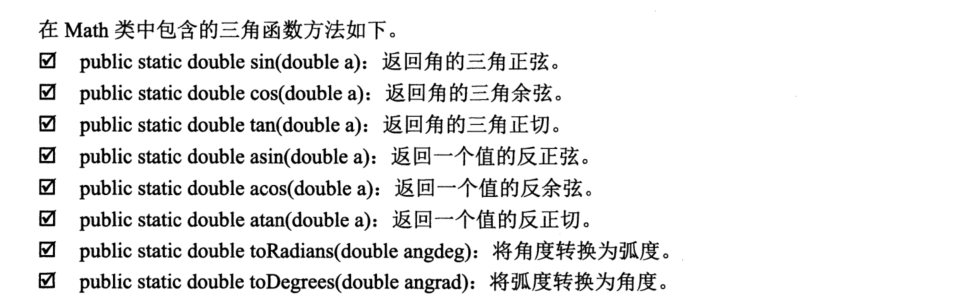

Contents
6.2. Math类¶
Math类中提供了众多数学函数方法，主要包括三角函数方法，指数函数方法，取整函数方法， 取最大值、最小值以及平均值函数方法，这些方法都被定义为static形式。

eg
public class TrigonometricFunction {
// 主方法
public static void main(String[] args) {
// 取90度的正玄
System.out.println("90度的正玄值为："+ Math.sin(Math.PI/2));
// 取0度的余玄
System.out.println("0度的余玄值为: " + Math.cos(0));
// 取60度的正切
System.out.println("60度的正切值："+ Math.tan(Math.PI /3));
// 2的平方根与2商的反正玄
System.out.println("2的平方根与2商的反玄值：" + Math.asin(Math.sqrt(2)/2));
// 2的2次方
System.out.println("e的平方值："+ Math.exp(2));
// 取4的平方根
System.out.println("4的平方根值："+ Math.sqrt(4));
// 取8的立方根
System.out.println("8的立方根：" + Math.cbrt(8));
// 取2的2次方
System.out.println("2的2次方：" + Math.pow(2, 2));
}
}
/*输出结果
90度的正玄值为：1.0
0度的余玄值为: 1.0
60度的正切值：1.7320508075688767
2的平方根与2商的反玄值：0.7853981633974484
e的平方值：7.38905609893065
4的平方根值：2.0
8的立方根：2.0
2的2次方：4.0
*/
6.2.1. Math.random()方法¶
public class Math_random {
// 定义获取任意字符之间的随机字符
public static char GetRandomChar(char cha1, char cha2) {
return (char)(cha1 + Math.random()*(cha2 - cha1+1));
}
// 主方法
public static void main(String[] args) {
// 获取a-z之间的随机数
System.out.println("任意小写字符: " + GetRandomChar('a', 'z'));
// 获取A-Z之间的随机数
System.out.println("任意大写字符：" + GetRandomChar('A', 'Z'));
// 获取0-9之间的随机字符
System.out.println("0到9之间的任意数字字符：" + GetRandomChar('0', '9'));
}
}
/*输出结果
任意小写字符: b
任意大写字符：G
0到9之间的任意数字字符：6
*/